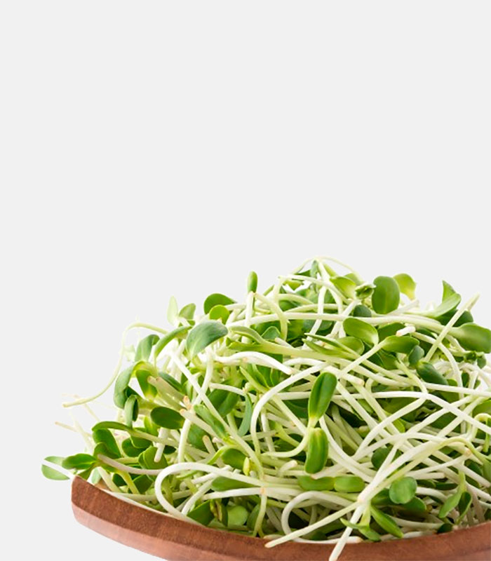

¿Por qué germinar?

Ecológico
- Los germinados no producen desechos y además, como los producimos nosotros, reducimos la necesidad de transporte e intermediarios para poder alimentarnos: son alimentos que contribuyen a la ecología del planeta.
Económico
- Es una manera económica de comer ya que sólo necesitamos semillas, agua y algún recipiente que puede ser reciclado.
- Se puede germinar en ambientes pequeños y el rendimiento es muy grande.
- Podemos disponer de germinados y brotes durante todo el año.
Valioso
- La germinación nos pone en contacto con la vida.
- Es una hermosa actividad para hacer con los niños.
- Los germinados son estéticos y podemos con ellos decorar platos.
Nutritivo
- Desde el punto de vista nutricional nos aporta diez veces más de los nutrientes que tiene la planta en estado adulto.
- Hace más digerible y asimilable la semilla.
- Los germinados y brotes contribuyen a una alimentación variada.
- Algunos germinados van bien con comidas saladas y otros con comidas dulces.
- Los germinados se pueden incorporar a batidos y licuados.